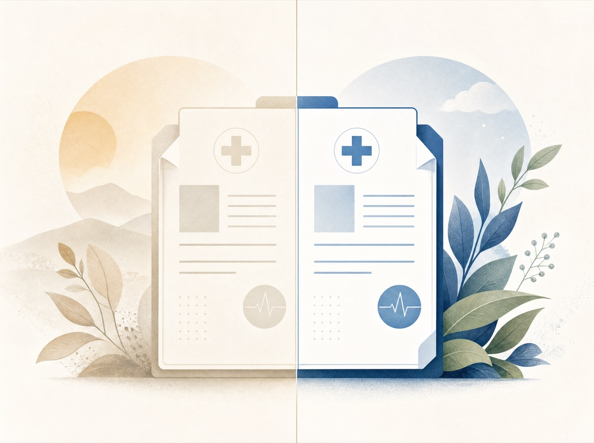

日本の医療ガイドライン約200冊について、旧版と新版で回答が変わった箇所を 46,705 件 集めました。
各ペアに新旧の出典が付いています。
改訂のたびに、診断基準や推奨薬が変わります。
古い版のままだと、今の標準と違う回答になります。
日本の医療ガイドラインを集めると、387 系列が改訂を重ねていて、旧版だけで 664 件ありました。改訂はだいたい数年おきです。たとえば CKD 診療ガイドは 2007・2009・2012・2024 と4回改訂されています。変わったこと自体より、どこがどう変わったかが見えにくいのが問題です。
本データセットは、そのうち旧版の本文を取得できた 336 系列・旧版 518 本 を新版と照合し、変わった箇所を 46,705 件 のペアにしました。改訂は1回とは限りません。102 系列（30%）は旧版を複数持ち、最も多い系列では10本以上あります。
336 系列のうち、複数の旧版を持つものが 102 系列（最大10本）
この新旧の差分は、DPO（最新版を選ばせる選好学習）、埋め込みの時間軸学習、医師の継続教育（CME）、モデルが古い知識を答えないかの評価などに使えます。
日本の医療ガイドライン 201 冊・2010〜2024年 を対象に、同じガイドラインの旧版と新版の回答を突き合わせ、46,705 件 を新旧の出典付きで収録しました。各ペアは type（revision / addition / none / new / unrelated）で分類しています。DPO、埋め込みの時間軸学習、医師の継続教育、時間整合性の評価などに使えます。
古いガイドラインのまま診療すると、患者のリスクになります。「数年前の知識で止まっている医師」の見落としは、大きく 2種類 あります。本データセットは、その両方を type で分けて収録しています。

全ペアを、新旧の差の性質で5つに分けています。
捨てるのは判定できなかったものだけです。
| type | 意味 | 件数 |
|---|---|---|
| revision | 旧版から新版で答えが臨床的に変わった（DPO向き） | 7,042 |
| addition | 新版で情報が追加された（旧版と矛盾しない） | 6,680 |
| new | 旧版にない新登場（新薬・新概念） | 1,430 |
| 旧版の類似箇所が別の話題（要確認） | 255 | |
| none | 言い回しだけで中身は同じ | 31,298 |
全 46,705 件の内訳
冠攣縮性狭心症を「確定／疑い」とする前提条件は？
硝酸薬によりすみやかに消失する狭心症様発作であること。
自然発作・非薬物誘発試験・薬物誘発試験（アセチルコリン等）のいずれかで確認する。
日本循環器学会ほか
SGLT2阻害剤の服用時に注意すべき熱中症の誘因は？
メトトレキサート（MTX）投与時に併用すべき薬剤と目的は？
葉酸製剤を併用し、肝機能障害・消化器症状・口内炎を予防する。
葉酸／活性型葉酸（ロイコボリン®）を併用…（活性型葉酸の具体名と推奨用量を追記）。
新版側ガイドラインの発行年（2010–2024、ピークは2020年）
改訂 7,042 件の major / minor 内訳
新版の Q&A を起点に、同じガイドラインの旧版本文と照合します。
4ステップです。
ruri-v3-310m でベクトル化し、同じガイドラインの旧版 L2 チャンクから上位5件を取り出します。gemma-4-31b で回答します。該当がなければ飛ばします。gemma-4-31b で比べ、revision / addition / none / unrelated に振り分けます。本データセットは CC BY 4.0 で公開しています（商用可・改変可）。CC BY 4.0 では、利用時に出典の明記（著作者・データセット名・ライセンス・変更の有無）が必須です。明記の形式には、下記の引用を使ってください。
none は学習信号がなく DPO 向きではありません。unrelated は検索の誤ヒットを含むので要確認です。新旧の年が同じ・不明なペアもあります（版メタデータ由来）。